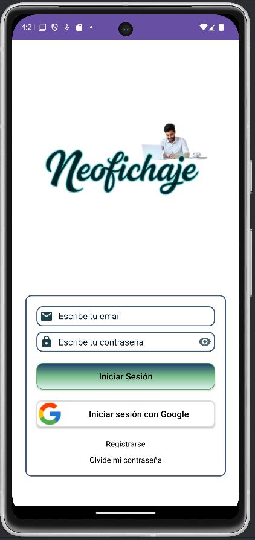
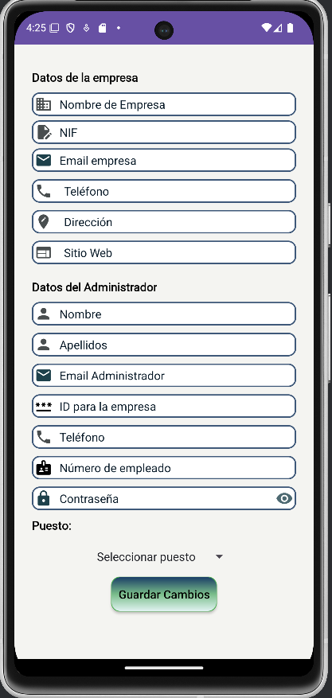
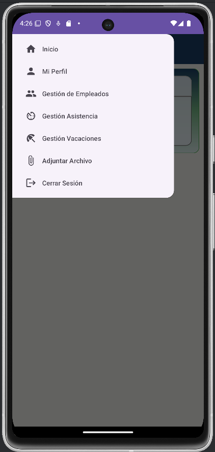
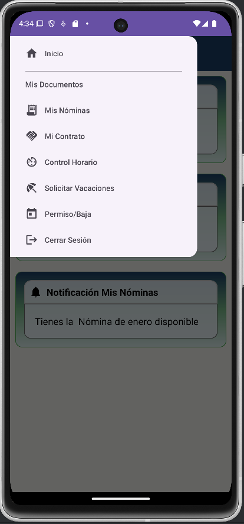
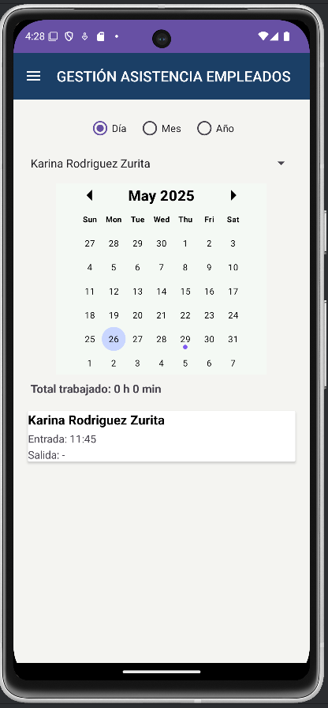
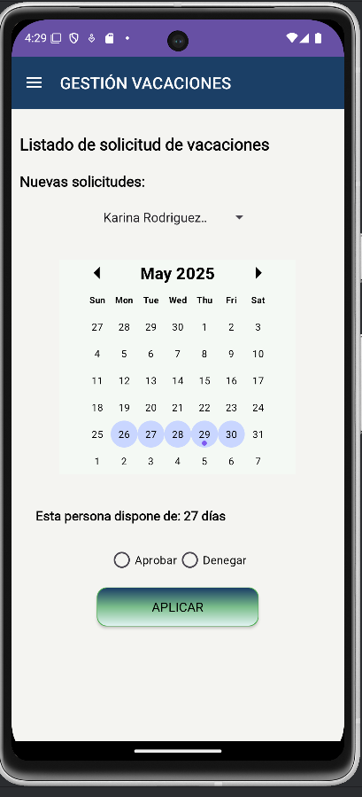
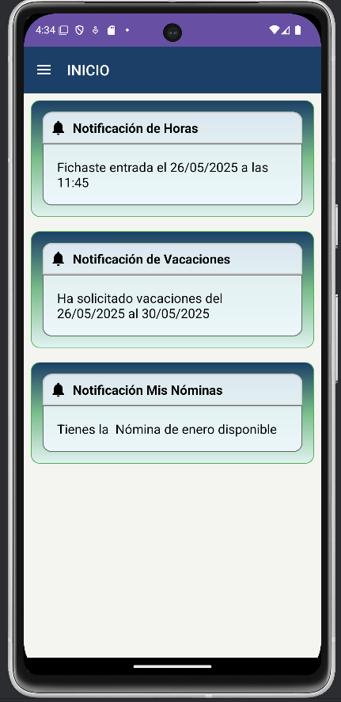

NeoFichaje – Aplicación Android
Aplicación móvil desarrollada para optimizar el control horario y la gestión de empleados en pequeñas y medianas empresas.
Descripción del Proyecto
NeoFichaje es una aplicación Android diseñada para digitalizar el registro de jornada laboral, la gestión de vacaciones y la administración documental de empleados. Permite a los trabajadores registrar entradas y salidas, solicitar permisos y consultar documentación personal, mientras que los administradores pueden supervisar y gestionar su equipo de forma remota.
Tecnologías Utilizadas
- Android Studio: Entorno de desarrollo
- Kotlin: Lenguaje principal
- XML: Diseño de interfaces
- Firebase Authentication: Registro e inicio de sesión seguro
- Firestore: Base de datos NoSQL en la nube
- Firebase Cloud Storage: Almacenamiento de documentos
- Google Sign-In: Autenticación con cuenta de Google
- MaterialCalendarView: Selección avanzada de fechas
Roles de Usuario
Empleado / Técnico
- Registro de entradas y salidas
- Solicitudes de vacaciones y permisos
- Visualización de documentos personales
Administrador / Empresario
- Alta y gestión de empleados
- Aprobación de solicitudes
- Subida de contratos y nóminas
- Supervisión de asistencia
Funcionalidades Destacadas
- Fichaje con geolocalización
- Registro y login con correo electrónico y Google
- Consulta y descarga de contratos y nóminas
- Gestión de vacaciones y permisos
- Sistema de notificaciones internas
- Historial de actividad por usuario
Flujo de Uso
- El usuario se registra o inicia sesión.
- Accede al panel correspondiente según su rol.
- Los empleados registran su jornada o gestionan solicitudes.
- Los administradores supervisan, aprueban y gestionan documentos.
Estructura del Proyecto
- /app: Código fuente principal (Activities, Fragments, ViewModels)
- /images: Capturas para documentación
- /gradle: Configuración del sistema de build
- firebase.json: Configuración de servicios Firebase
- README.md: Documentación del proyecto
Capturas de Pantalla







Seguimiento del Desarrollo
El progreso completo puede consultarse en el historial de commits del repositorio, donde se documenta cada fase del desarrollo, desde la planificación inicial hasta la implementación final y pruebas funcionales.
Autora
Proyecto desarrollado por Karina Rojas como trabajo final del segundo curso del Ciclo Formativo de Desarrollo de Aplicaciones Multiplataforma (DAM).